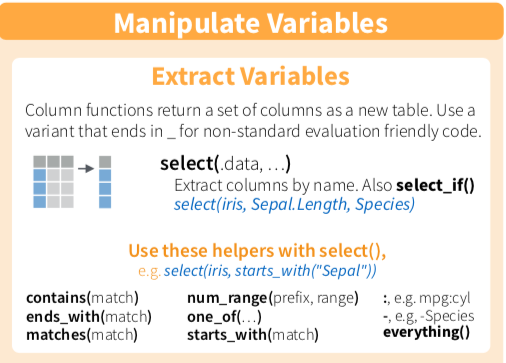

Chapter 4 挑選適當的欄位Select()

Select 是針對欄位(variables)做子集合
基本取法
flights %>% select(year,month,day,carrier,flight,tailnum,origin,dest)## # A tibble: 336,776 x 8
## year month day carrier flight tailnum origin
## <int> <int> <int> <chr> <int> <chr> <chr>
## 1 2013 1 1 UA 1545 N14228 EWR
## 2 2013 1 1 UA 1714 N24211 LGA
## 3 2013 1 1 AA 1141 N619AA JFK
## 4 2013 1 1 B6 725 N804JB JFK
## 5 2013 1 1 DL 461 N668DN LGA
## 6 2013 1 1 UA 1696 N39463 EWR
## 7 2013 1 1 B6 507 N516JB EWR
## 8 2013 1 1 EV 5708 N829AS LGA
## 9 2013 1 1 B6 79 N593JB JFK
## 10 2013 1 1 AA 301 N3ALAA LGA
## # ... with 336,766 more rows, and 1 more variable:
## # dest <chr>取連續某幾行的欄位
flights %>% select(year:day,carrier:origin)## # A tibble: 336,776 x 7
## year month day carrier flight tailnum origin
## <int> <int> <int> <chr> <int> <chr> <chr>
## 1 2013 1 1 UA 1545 N14228 EWR
## 2 2013 1 1 UA 1714 N24211 LGA
## 3 2013 1 1 AA 1141 N619AA JFK
## 4 2013 1 1 B6 725 N804JB JFK
## 5 2013 1 1 DL 461 N668DN LGA
## 6 2013 1 1 UA 1696 N39463 EWR
## 7 2013 1 1 B6 507 N516JB EWR
## 8 2013 1 1 EV 5708 N829AS LGA
## 9 2013 1 1 B6 79 N593JB JFK
## 10 2013 1 1 AA 301 N3ALAA LGA
## # ... with 336,766 more rows取特定類型（字首開頭）的欄位
#use the helper with select() in cheatsheet
flights %>% select(starts_with("dep"), starts_with("arr"))## # A tibble: 336,776 x 4
## dep_time dep_delay arr_time arr_delay
## <int> <dbl> <int> <dbl>
## 1 517 2.00 830 11.0
## 2 533 4.00 850 20.0
## 3 542 2.00 923 33.0
## 4 544 -1.00 1004 -18.0
## 5 554 -6.00 812 -25.0
## 6 554 -4.00 740 12.0
## 7 555 -5.00 913 19.0
## 8 557 -3.00 709 -14.0
## 9 557 -3.00 838 - 8.00
## 10 558 -2.00 753 8.00
## # ... with 336,766 more rows取x y z變數以外的欄位
flights %>% select(-c(time_hour, carrier,tailnum))## # A tibble: 336,776 x 16
## year month day dep_time sched_dep_time dep_delay
## <int> <int> <int> <int> <int> <dbl>
## 1 2013 1 1 517 515 2.00
## 2 2013 1 1 533 529 4.00
## 3 2013 1 1 542 540 2.00
## 4 2013 1 1 544 545 -1.00
## 5 2013 1 1 554 600 -6.00
## 6 2013 1 1 554 558 -4.00
## 7 2013 1 1 555 600 -5.00
## 8 2013 1 1 557 600 -3.00
## 9 2013 1 1 557 600 -3.00
## 10 2013 1 1 558 600 -2.00
## # ... with 336,766 more rows, and 10 more variables:
## # arr_time <int>, sched_arr_time <int>,
## # arr_delay <dbl>, flight <int>, origin <chr>,
## # dest <chr>, air_time <dbl>, distance <dbl>,
## # hour <dbl>, minute <dbl>小練習
- 我想要看每位球員的基本資訊(名字、所屬隊伍、守備位置)，以及他一共搶了多少個籃板球、幾次助攻、幾次抄截?
Hint: 變數分別是 TotalRebounds, Assists, Steals
NBA1718 %>% select(League:Position, TotalRebounds:Steals)